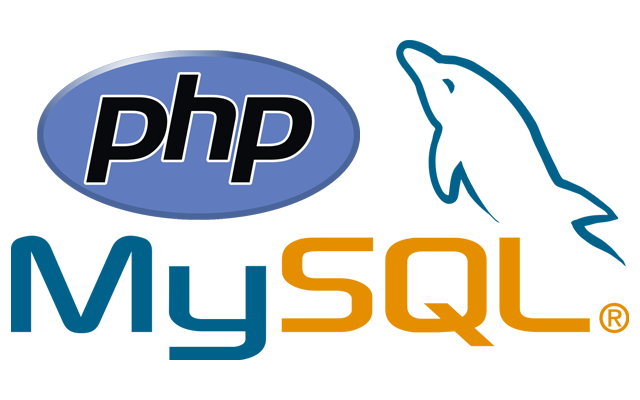
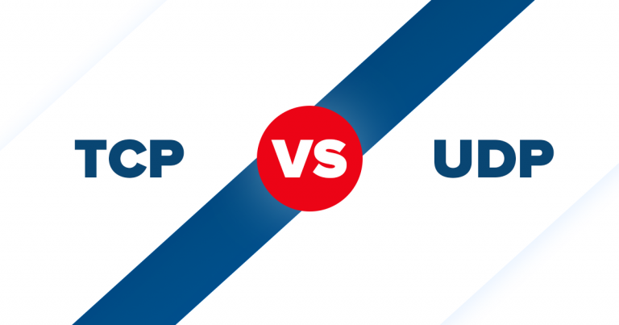

Una socket è un punto finale di comunicazione in una rete, identificato da un indirizzo IP e un numero di porta, che consente lo scambio di dati tra processi su macchine diverse.
Inizia ora, cos'è una socket?